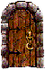

... rammento bene della mia visita nel Ducato di Southland ... gente affabile e cortese, persone di poche parole ma fattive, un popolo disponibile e tranquillo.
La vita in un Ducato nel profondo sud, così isolato dal male che ha investito il nord di Arelia travolgendolo, mi sembrò subito fuori dal reale. A volte ebbi l'impressione di trovarmi in un luogo fuori dal tempo, ricordo ancora la sensazione che provai percorrevo la lunga strada che da Estway (primo centro abitato del Ducato che si raggiunge sulle grosse chiatte da trasporto che provengono dal Granducato di Trisengard solcando le profonde e verdi acque dello Smerald) conduce alla capitale Sinkros. Si tratta di una larga strada costruita con grossi lastroni di pietra di tufo che ne delimitano i margini formando un muretto di circa 1 metro e il cui letto è formato da terriccio pressato, è larga ben 6 metri e costeggia una costa dall'incredibile bellezza. Su un lato, infatti, vi è la costa e la spiaggia che si trova in basso a una ventina di metri dalla strada che costeggia la scogliera. Non sembra facile la discesa dalla scogliera su cui corre la strada e la spiaggia anche se di tanto in tanto si incontrano tratti di roccia tagliati a scalini o discese più o meno ripide. Giù la spiaggia è ampia centinaia di metri e un immenso oceano blu intenso la sfiora con un tocco delicato. La spiaggia è piena di arbusti e laddove la scogliera scende a contatto con la sabbia gialla e grossa vi sono molte caverne naturali, notai che alcune di queste erano utilizzate dai pescatori per mettere al sicuro le loro imbarcazioni. Sull'altro lato della strada, invece, piantati in perfetto ordine, grosse querce seguono la principale strada del ducato per chilometri e chilometri. Un atmosfera nuova mi colpì, un luogo ridente e spazioso ma quasi disabitato. Nei tre giorni che impiegai a raggiungere Sinkros incontrai solo in due occasioni viaggiatori, e la prima volta restai sorpreso. In questo scenario ridente ma monotono avvistai sulla distanza un cavallo con un cavaliere. La sua lucentezza e il suo colore bianco lo rendevano facilmente visibile. Mi passò accanto al passo facendomi solo un cenno con il guanto destro. Aveva una bellissima divisa. Sia egli che il suo destriero erano coperti da drappi di un bianco candido, i pezzi di corazza che aveva indosso erano tanto puliti da risultare lucenti, ma quello che mi colpì fu un grosso scudo bianco con al centro una stella di luce dorata. Solo dopo scoprii che si trattava di un Cavaliere dell'Ordine della Sacra Luce, un ordine di devoti alla divinità Tanatos che sono illuminati nelle loro azioni dalla fede nel loro culto.

L'organizzazione politica del Ducato di Southland
La Santa Chiesa di Tanatos nel Ducato di Southland
Il Culto di Loky nel Ducato di Southland